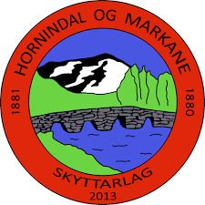

Retura-cup
2023
Oppdatert: 18.2.2023, 15:52
| Skytter | Skytterlag | Total | ") | ") | ") |  | | |||||||||
|---|---|---|---|---|---|---|---|---|---|---|---|---|---|---|---|---|
| Jakob Mathias Nesheim Aardalsbakke | Eidsbygda | 161 | 15 | 15 | 8 | 12 | 12 | 10 | 12 | 10 | 12 | 10 | 15 | 15 | 15 | |
| Ørjan Frøysadal Hauge | Sunnylven | 105 | 15 | 15 | 15 | 15 | 15 | 15 | 15 | |||||||
| Linnea Grinde | Haugen | 95 | 12 | 8 | 6 | 4 | 10 | 12 | 5 | 8 | 10 | 10 | 10 | |||
| Kristine Solheim | Almenning | 79 | 5 | 10 | 10 | 10 | 5 | 6 | 8 | 10 | 15 | |||||
| Emma Årdal | Almenning | 58 | 8 | 12 | 10 | 12 | 4 | 4 | 8 | |||||||
| Thitiphan Ngoenaree | Almenning | 47 | 4 | 8 | 4 | 8 | 5 | 8 | 10 | |||||||
| Sondre Rotihaug Dalseth | Hundeide | 45 | 3 | 8 | 6 | 12 | 8 | 8 | ||||||||
| Lars Rune Mjellem | Hyen | 39 | 15 | 12 | 12 | |||||||||||
| Angelica Årvik | Almenning | 38 | 12 | 6 | 2 | 3 | 3 | 6 | 6 | |||||||
| Lance Grepstad | Almenning | 19 | 6 | 8 | 5 |
| Skytter | Skytterlag | Total | | | | | ||||||||||
|---|---|---|---|---|---|---|---|---|---|---|---|---|---|---|---|---|
| Leif Gunnar Ødegård | Bryggja | 114 | 15 | 15 | 12 | 12 | 15 | 15 | 15 | 15 | ||||||
| Ove Morten Skrede | Nordbygda og Rand | 75 | 15 | 15 | 15 | 15 | 15 |